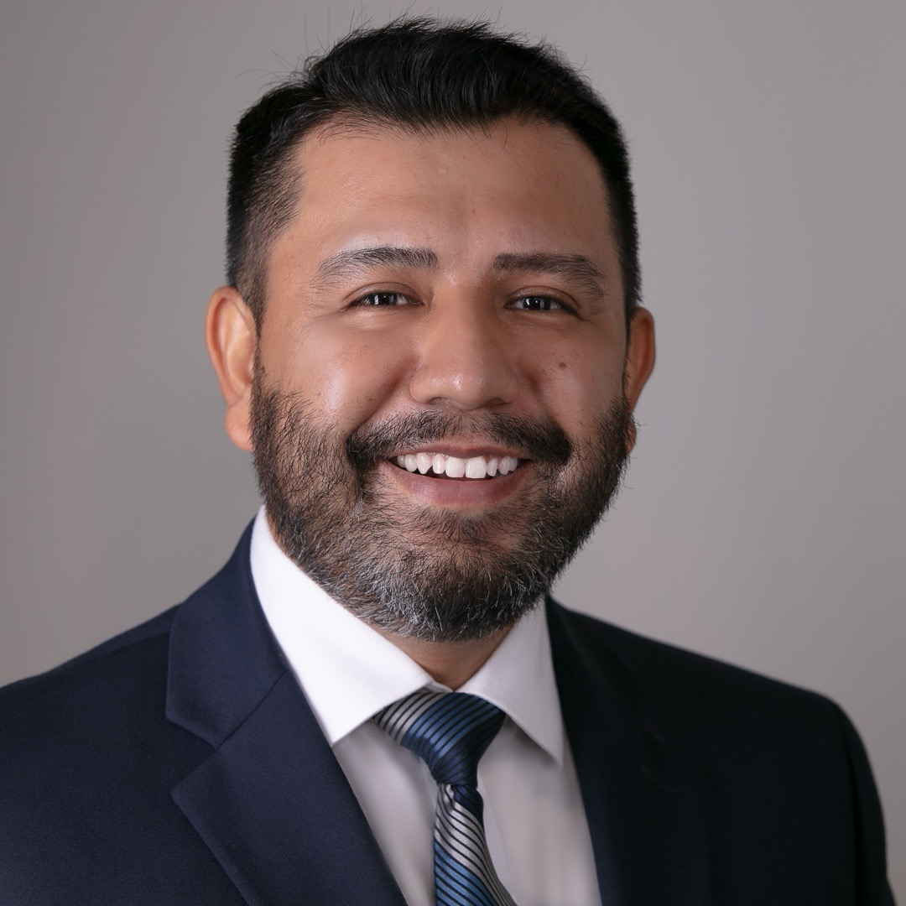

Francisco D'Arcy

Career Objective
With over 10 years of experience in fintech and SaaS, and 15+ years in customer-focused roles, I bring strong analytical, problem-solving, and collaboration skills to Software Quality Assurance. Having recently transitioned to QA, I’m committed to delivering high-quality products through testing, process improvement, and effective communication. My goal is to eventually leverage my technical expertise and business insight to grow into a Product Management role, bridging the gap between development teams and business needs, while contributing to the creation of user-centric, innovative products in a dynamic, growth-driven environment.
Education
Degree
Bachelor of Business Administration, Management, Kennesaw State University
(2002-2006, 2022)
Certifications
- Complete SQL Bootcamp, Udemy
- Jira for Users, Manager and Admins, Udemy
- Full-Stack Web Developer, Udemy
Professional Experience
Software QA Engineer October 2024 - Present
IOU Financial | Kennesaw, GA
Developed user-friendly web applications using HTML, CSS, and JavaScript.
- Collaborated with developers to create test plans, test cases, and test scripts.
- Performed manual testing on web applications, identifying and documenting defects.
- Utilized Postman to test APIs and verify data integrity.
- Participated in Agile ceremonies, including sprint planning, stand-ups, and retrospectives.
Account Executive July 2024 - September 2024
Otelier | Atlanta, GA
Member of High Velocity Team, responsible for $750,000 quota in the Hospitality vertical. Business Intelligence and RevOps SaaS.
- Convert leads into net new logos owning the full life-cycle sales process: prospecting, cold calling, discovery, demo, presenting, negotiating and closing.
- Gained knowledge on SaaS sales techniques, methodologies and tools like Salesloft, Sales Navigator and sharpened my Salesforce knowledge even more.
- Build a pipeline of high-quality opportunities to deliver against sales metrics ensuring KPIs were met.
Business Growth Advisor November 2021 - June 2024
Account Executive November 2020 - November 2021
IOU Financial - Zing Funding | Kennesaw, GA
Experienced Account Executive with a track record of driving business growth and optimizing strategies to meet market demands.
- Engaged with owners and C-suite executives; spanning nationwide SMB and Mid-Market clients, to conduct needs assessments and identify opportunities for product enhancement or development in the B2B Fintech lending arena.
- Managed an active pipeline consisting of a mix of industries, connecting with over 350 stakeholders weekly.
- Actively hunted and generated leads through in depth research & prospecting, BANT framework qualifying, cold calling and referrals resulting in consistent sales growth of 8.4% above quota month over month.
- Became a product expert within 6 months, providing an understanding and articulating of the features and benefits of financial products, specializing in Lines of Credit and Term Loans resulting in 27% net new logos.
- Full life-cycle sales process, from lead generation to onboarding, achieving an average monthly sales volume of $783K with an ACV of $85,800 by leveraging data-driven insights to prioritize leads and optimize conversion rates.
- Attained a commitment conversion rate of 11.4% during first interactions with prospective clients, highlighting strong negotiation and persuasion skills.
Assistant Director of Food & Beverage (Position affected by COVID-19) January 2017 - March 2020
Director of Food and Beverage – Task Force (Hudson Hotel, Manhattan, NY) December 2016 - May 2017
Senior Food & Beverage Manager November 2015 - January 2017
Food & Beverage Manager October 2014 - November 2015
Shore Club Hotel| Morgans Hotel Group | Miami Beach, FL
Utilized data-driven insights to strategically lead the F&B department of a 309-key hotel with 6 outlets, managing a $17.5m budget and overseeing a team of 80+ employees. Conducted comprehensive market and operations analysis to drive performance improvements.
- Achieved a 17% increase in profit over budget, reduced overall beverage costs by 4.7%, and enhanced food profits by 6.4% in the first year as Assistant Director through rigorous sales, inventory, and cost data analysis.
- Provided visionary leadership and guidance to F&B leaders on key performance indicators (KPIs), fostering a positive work environment and achieving a 92% employee satisfaction score, driving an 11% increase in employee sales over budget.
- Evaluated budget strategy, and devised action plans with line managers, resulting in an 11.3% YoY profit growth over budget from 2018 to 2020.
- Achieved consistent year-over-year expense reductions of 9.7% by cultivating strategic partnerships with premier brand vendors and clients, demonstrating adept negotiation skills and cost management expertise.
Skills
Technical
Developed user-friendly web applications using HTML, CSS, and JavaScript.
- MS Office Suite
- Google Workspace
- Agile Methodology
- Jira Cloud
- Manual Testing
- Postman
- VS Studio Code
- SQL: PostgreSQL
- HTML
- CSS
- JavaScript
- React
- Node
- Web3
- Dapps
Management
- Contract Negotiations
- Presentation & Communication
- Talent Leadership & Training
- Product Knowledge & Market Insight
- P&L Management
- Product Launch
Languages
- English - Native Fluency
- Spanish - Native Fluency
- Italian - Beginner
Accolades
- Leader of the Quarter – Shore Club
- Fall 2015
- Spring 2016
- Spring 2017
- Winter 2018
- Fall 2019
Other